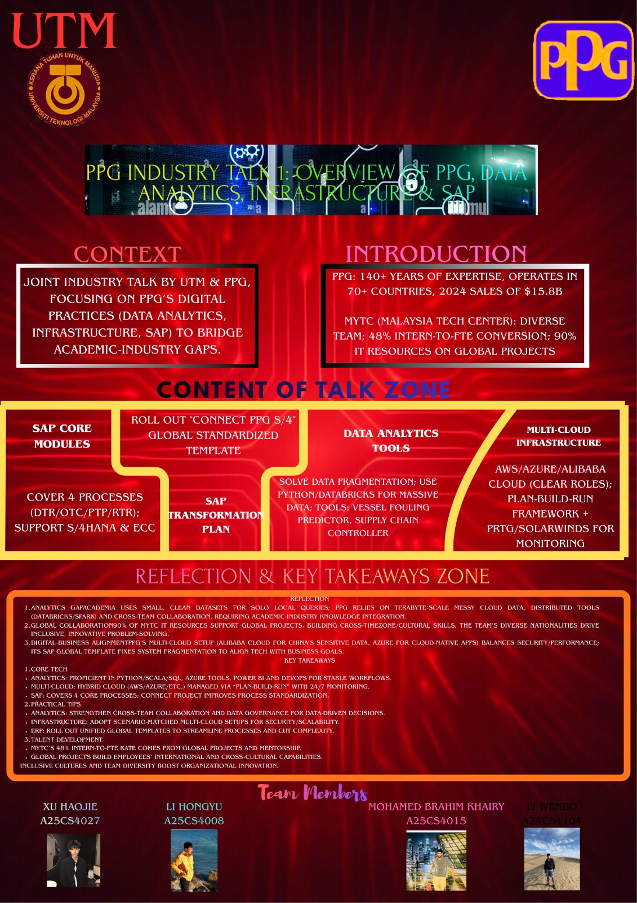

HELLO EVERYONE,
MY NAME IS
MOHAMED BRAHIM KHAIRY
Hardware Project: PC Assembly
.jpg)
Detailed Description: The PC Assembly project was a hands-on journey into the core of computer hardware. It involved identifying internal components such as the motherboard, CPU, RAM, and storage units while ensuring proper installation and safety protocols.
What I Gained: I gained practical expertise in hardware handling, cable management, and airflow optimization. It proved that software performance is deeply tied to hardware efficiency.
Assignment 1: Reflection on Industrial Visit 1 (UTM Open Day)
What I Gained: This visit to UTM Digital provided me with my first exposure to smart campus infrastructure. I learned how UTM utilizes AI and smart services to enhance student life. Seeing the server infrastructure firsthand helped me understand the scale of digital resources required for a university.
Reflection: It inspired me to think creatively about how technology can bridge the gap between human needs and automated solutions. It was a great confidence booster to see real-world applications of what we study in class.
Assignment 2: Reflection for Poster (PPG Industrial Talk 1)
What I Gained: Through this talk, I explored how a global leader like PPG manages a "Cloud-Only" infrastructure using AWS and Azure. I gained insights into SAP Process Flows, specifically how ERP systems integrate finance, logistics, and operations in real-time.
Reflection: Creating the poster allowed me to practice data visualization—turning complex industrial architecture into a clear, visual narrative. I realized that ICT is not just technical support but a strategic driver for global business success.
Assignment 3: Computer Science Journey & Prototype
What I Gained: I learned that a successful career in Computer Science requires a deep understanding of the Software Development Life Cycle (SDLC) and user-centric design. This section covers my journey in building the core foundations of computing along with our design thinking prototype.
Reflection: This assignment emphasized the importance of professional academic writing and effective teamwork. It encouraged me to develop a balanced skill set, combining technical mastery with analytical thinking.
Assignment 4: Reflection for Technology Information Systems
What I Gained: This assignment allowed me to refine my technical documentation and analytical skills by synthesizing everything I learned throughout the semester into a comprehensive final report.
Reflection: It taught me how to present complex information in a structured and professional manner. This experience in critical thinking and report writing is essential for managing large-scale projects in my future career.
About Me
I am a highly motivated student at Universiti Teknologi Malaysia (UTM) specializing in Computer Science with a keen interest in Graphics and Multimedia. I am passionate about how digital systems can create impactful visual experiences and solve industrial challenges.
Core: Education & Skills
Education: Bachelor of Computer Science, Universiti Teknologi Malaysia (UTM).
Skills: Information Systems, Hardware Assembly, Technical Documentation, UI/UX Principles.
Recommended: Courses
• Advanced Computing Principles - UTM.
• Digital System Design & Hardware Optimization.
Additional: Projects & Recognition
• Project: Building Maintenance Management System (BMMS).
• Technical Skills: Full PC Hardware Assembly and Optimization.
• Project: Industrial Data Visualization & Poster Design.